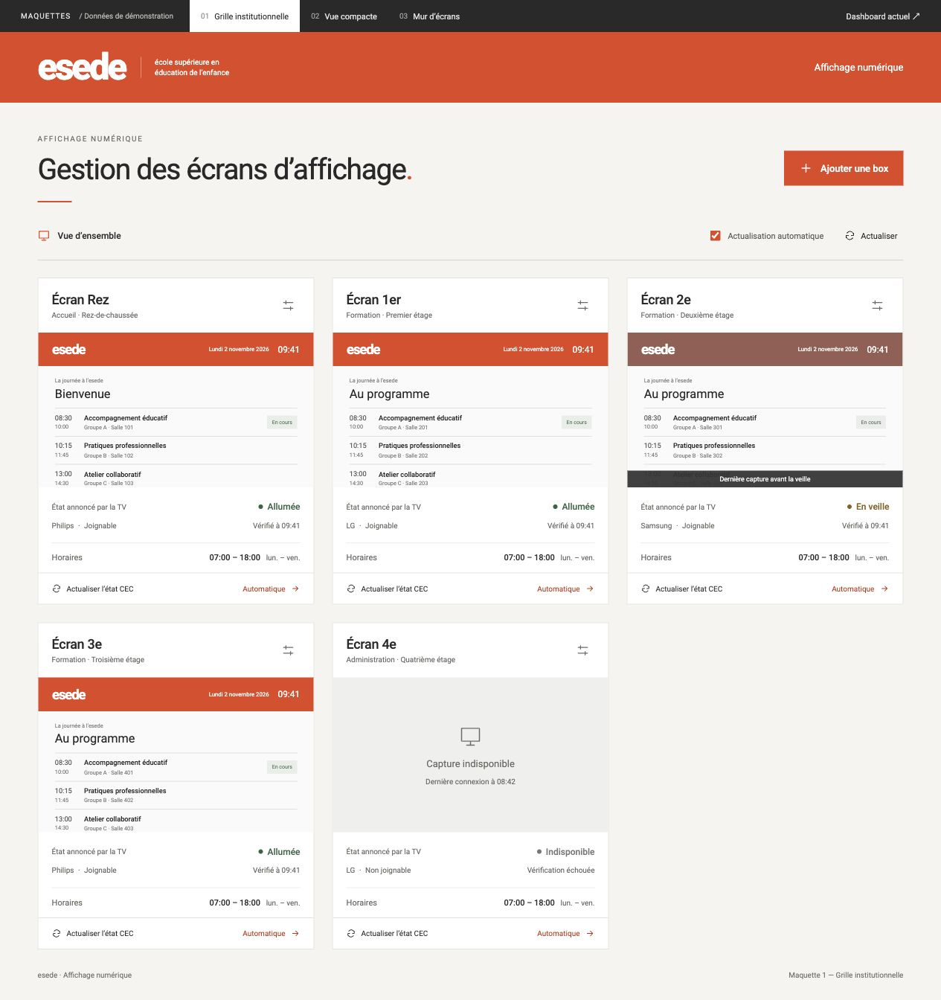
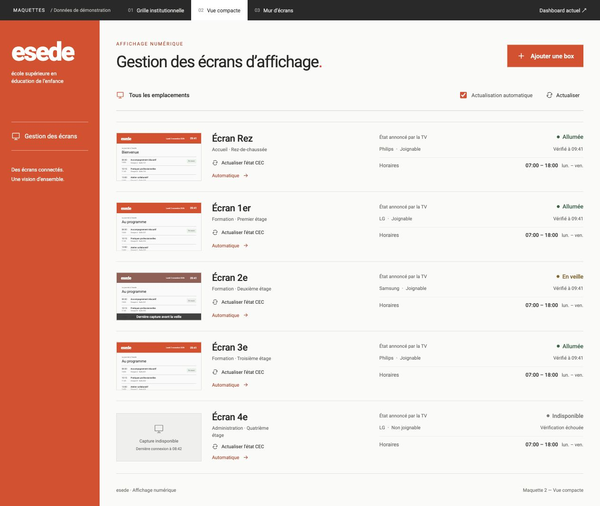
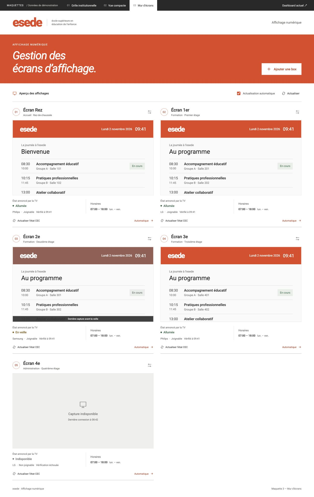

01 / VUE D’ENSEMBLE
Grille institutionnelle
Un équilibre entre captures, état des TV et commandes.
Explorer la maquette ↗
02 / GESTION QUOTIDIENNE
Vue compacte
Des lignes alignées pour comparer rapidement les box.
Explorer la maquette ↗
03 / PRIORITÉ À L’IMAGE
Mur d’écrans
Des captures plus grandes pour suivre les affichages.
Explorer la maquette ↗